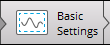

EddyPro® 7 Software
Processing eddy covariance datasets
This section describes the basic steps for using EddyPro.
Processing .ghg files with correct site parameters
If you logged the eddy covariance data to a SmartFlux Sytem .ghg format and entered the correct site information, the .ghg file will contain an embedded .metadata file with information needed for processing the accompanying .data file.
If, during the acquisition period, you changed settings in the gas analyzer data logging interface in order to account for changes in the site parameters, these changes will be stored in the metadata. EddyPro allows you to account for the time dependency by processing each data file (.data extension) using meta-information retrieved from the paired metadata file embedded in the .ghg file.
Note: If there were no changes in the project metadata for the eddy covariance dataset under consideration, you can speed up processing by using a single metadata file for the entire project, as described in Processing .ghg files with incorrect or no site parameters.
To process the dataset, launch EddyPro:
- Start a New Project.
- Enter a Project name (optional).
- Click the Basic Settings button. See Basic settings.
- 
Processing .ghg files with incorrect or no site parameters
If you collected eddy covariance data using LI-COR® data logging software, your dataset will be comprised of raw files in .ghg format. Each .ghg file contains a metadata file (extension of .metadata) with information needed for processing the paired .data file. If, during the acquisition period, you changed settings in the data logging interface in order to account for modification of critical meta-information, the obtained dataset will contain dynamic, time-dependent metadata. EddyPro allows you to account for this time dependency, processing each .data file using meta-information retrieved from the paired .metadata file embedded in the compressed .ghg file.
However, there are two situations in which you might want or need to bypass embedded metadata files:
- When embedded metadata files have incorrect information (e.g., because they contain errors in critical meta-information);
- When all embedded metadata files, correct or incorrect, are identical because no changes were made during data acquisition.
In these cases EddyPro provides a way to bypass embedded .metadata files and use an alternative file.
Important: Using an alternative .metadata file means that all .ghg files are processed with the same meta-information (unless you provide a dynamic metadata file; see Time-varying (dynamic) metadata). It also implies that all .data files must have the exact same format, which must be correctly described in the alternative .metadata file.
To use an alternative metadata file for your dataset:
- Start a New Project and select LI‑COR .ghg as the file type.
- Enter a Project name (optional).
- In the Basic Settings page, enter the Raw data directory, where your raw data are stored.
- Return to the Project Creation page and select the option Metadata file: Use alternative file. The Metadata File Editor will activate with the metadata from the first .ghg file in your project.
- Make changes to the metadata file as needed.
- Click Save metadata as... and save the file with a new file name. This file is the Alternative metadata file. You can modify it here or use it as it is.
- When all mandatory meta-information is entered with plausible values, the Basic Settings button activates.
- Click it. See Basic settings.
Processing ASCII, binary, TOB1, or SLT files
EddyPro® Software can process raw data in a variety of formats, including virtually all sorts of Generic ASCII, Binary, TOB1 (Campbell® Scientific, Inc.), and SLT (EddySoft and EdiSol) formats.
For interpreting and processing those files, EddyPro needs the same meta-information needed for .ghg files, but for these file types, the meta-information is not available directly in the data files. Therefore, you must create and use an alternative .metadata file. Selecting any Raw file format other than LI‑COR .ghg will cause the Metadata file entry to automatically toggle to the Use alternative file option and the Metadata File Editor to activate.
Note: The Use embedded files option deactivates, because in this case there is no embedded .metadata file available.
- Launch EddyPro and start a New Project.
- Enter a Project name (optional).
- Select either ASCII plain text, Generic binary, TOB1, SLT (EddySoft), or SLT (EdiSol) as the Raw file format.
- Enter all the required information in the Metadata File Editor.
- The graphical interface will help you prepare a valid metadata file by preventing you from entering non-physical or implausible values and by activating the Basic Settings button only when all mandatory fields hold valid entries. Fill out the mandatory entries in the Station, Instruments and Raw file description tabs, in this order. Also configure the Raw File Settings dialog. The metadata file will be saved automatically when it is edited. The path of the saved file will appear in the text field adjacent to the Use alternative file option of the Metadata file entry. See Using the metadata file editor
- Click the Basic Settings button to advance to the Basic Settings page.
- See Basic settings.
In this page: